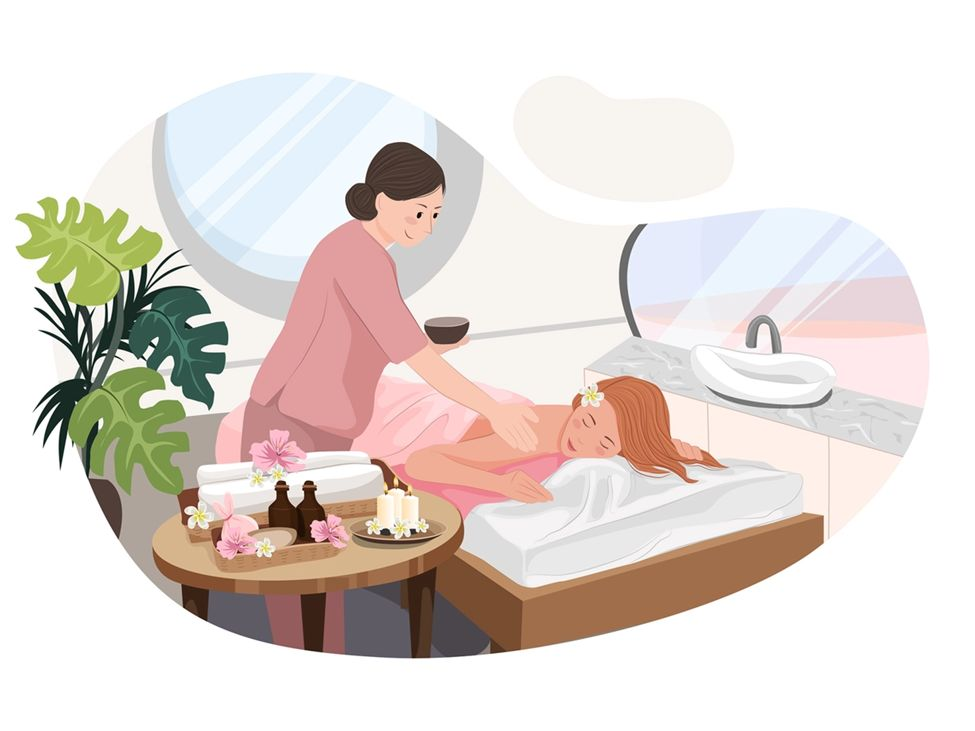
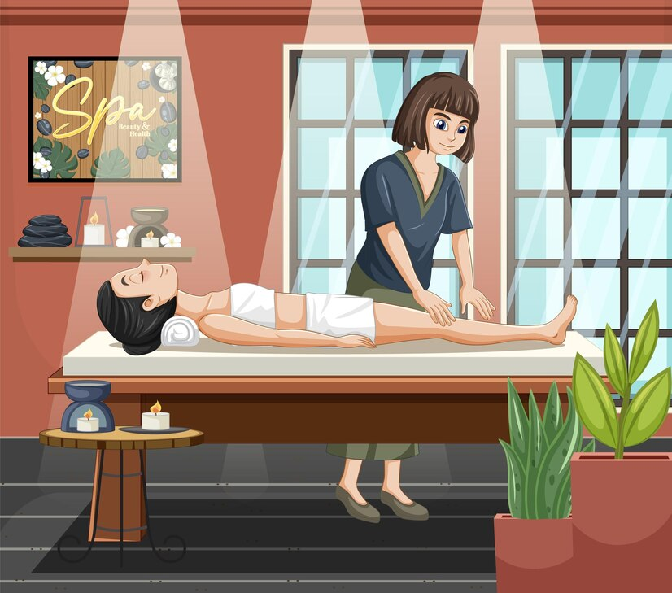

Behandlingar Upplev den ultimata avkopplingen och välbefinnande behandlingar. Vårt tillvägagångssätt Vi prioriterar ditt välbefinnande. Vårt tillvägagångssätt kombinerar gamla helande praktiker med moderna tekniker, vilket säkerställer en holistisk upplevelse som adresserar både kropp och själ. Boka nu En plats för helande, lugn och välbefinnande  Slappna av i sinnet Heala din kropp Friska upp din själ Skäm bort dig själv med våra behandlingar som Sportmassage (Djupgående), Reflexologi (Fot), Kontorssyndrom (Rygg, Huvud & Axlar), Yogamassage, Aromaterapi och Varm kokosoljemassage Sportmassage Sportmassage (Djupgående) fokuserar på områden av kroppen som är överansträngda och stressade från repetitiva och ofta aggressiva rörelser. Det främjar flexibilitet, minskar trötthet, förbättrar uthållighet, hjälper till att förebygga skador och förbereder din kropp och ditt sinne för optimal prestation. Smärtlindring, avslappning av muskler och förbättring av vävnadselasticitet. Perfekt före eller efter träning, den använder en kombination av tekniker och sportolja för att lindra muskeltrötthet och spänningar. 600 kr. (30 min) 1200 kr. (60 min) Boka nu Reflexologi Reflexologimassage använder olika beröringstekniker på specifika punkter på fötterna som verkar på energibanor liknande akupunktur för att normalisera kroppsfunktioner, återställa energi i hela kroppen och bibehålla optimal hälsa. Reflexologi fokuserar på dina fötter med denna urgamla helande praktik som stimulerar tryckpunkter för att främja balans och avslappning i hela kroppen. Perfekt för stresslindring, smärtlindring, förbättrar humöret och ger en känsla av allmänt välbefinnande. 600 kr. (30 min) 1200 kr. (60 min) Boka nu Huvud, Axlar och Rygg (Kontorssyndrom) Lindra spänningar i överkroppen, bryt ner knutar och förbättra din flexibilitet. Det hjälper till att lindra huvudvärk genom att stimulera nerverna i hårbotten och blodcirkulationen i huvudet. Huvudsymptomet relaterat till ohälsosam sittställning är muskelsmärta eller spänningar, särskilt i nacke, axlar och rygg Denna massage är perfekt för dem som vill lindra stress och spänningar i överkroppen. Du kommer att känna dig avslappnad och återfå energi! 600 kr. (30 min) 1200 kr. (60 min) Boka nu Yogamassage Yogamassage är ett urgammalt helande system som kombinerar akupressur, indiska ayurvediska principer och assisterade yogaställningar medan man palperar och trycker längs kroppens energilinjer och tryckpunkter. Tillsammans resulterar dessa åtgärder i en omfattande helkroppsbehandling som lindrar muskelspänningar, förbättrar cirkulationen, stärker immunförsvaret och balanserar kroppen energimässigt. Perfekt för dem som vill förbättra sin flexibilitet, lindra stress och spänningar i kroppen. 600 kr. (30 min) 1200 kr. (60 min) Boka nu Stretchmassage Stretchmassage är ett fördelaktigt och effektivt sätt att öka blodflödet i hela kroppen, vilket kan hjälpa dig att må bättre från topp till tå. Stretchmassage inkluderar tekniker som djupgående massage, triggerpunktsbehandling, myofascial release och yogamassage. Handlar om helkropps stretching för att minska din muskeltrötthet och smärta. Alla gäster behöver byta om till en T-shirt och bomullsbyxor som kommer att tillhandahållas i vår studio. Detta möjliggör en bättre komfort under din stretch. 600 kr. (30 min) 1200 kr. (60 min) Boka nu Rygg- & Fotmassage Rygg- & Fotreflexologi kan hjälpa dig att leva ett hälsosammare och lyckligare liv. Det kan hjälpa till att lindra huvudvärk, förkylningssymptom, stress och många andra dagliga olägenheter. Lindra spänningar i överkroppen, bryt ner knutar och förbättra din flexibilitet. Reflexologimassage använder olika beröringstekniker på specifika punkter på fötterna. Cirkulationen förbättras, ökad syre- och näringstillförsel till hjärnan och kroppen. Avgiftning främjas, stress smälter bort. 1200 kr. (60 min) 1800 kr. (90 min) Boka nu Varm oljemassage Varm kokosoljemassage är en djupt avslappnande och föryngrande terapi som kombinerar kokosoljans naturliga helande egenskaper med lugnande värme. Denna behandling är utformad för att nära huden, lindra spänningar, slappna av musklerna, förbättra cirkulationen och främja allmänt välbefinnande. En kombination av lätt tryck, knådning och cirkulära rörelser för att lindra spänningar och återställa balansen. Perfekt för dem som lider av stress, ångest eller spänningar. 650 kr. (30 min) 1300 kr. (60 min) Boka nu Aromaterapi Aromaterapimassage är en holistisk terapi som kombinerar eteriska oljors helande kraft med lugnande massagetekniker. Denna behandling slappnar inte bara av kroppen utan förbättrar också det känslomässiga och mentala välbefinnandet genom de terapeutiska egenskaperna hos naturliga växtextrakt. Förbättra din massageupplevelse med eteriska oljor. Välj mellan lugnande lavendel eller uppiggande citrongräs för en verkligt personlig upplevelse. Perfekt för avslappning, stresslindring och allmän hälsa. 650 kr. (30 min) 1300 kr. (60 min) Boka nu Chi Nei Tsang (Mag) Chi Nei Tsang (CNT) är en hundraårig typ av helande beröringsterapi från Kina. Chi Nei Tsang betyder "att arbeta med de inre organens energi". Det är en urgammal form av avgiftande, energigivande, magmassage. Denna mjuka, djupgående massageteknik, centrerad huvudsakligen runt naveln, stimulerar kroppens självläkande mekanismer. Denna urgamla praktik stöder de stora organen, den möjliggör fysisk och emotionell avgiftning. Perfekt för att förbättra matsmältningen och minska uppblåsthet. 500 kr. (15 min) Boka nu Svep för att läsa mer 🌸 Viktig information 🌸 Sportmassage, yogamassage och stretchmassage rekommenderas vanligtvis inte för gravida kvinnor. Dessa behandlingar är inte heller lämpliga för personer med något av följande tillstånd: Tidigare högt blodtryck, diabetes, cancer, nyliga operationer, öppna sår, blödningsrubbningar, användning av blodförtunnande medel, djup ventrombos (DVT), vissa ryggmärgsbesvär. Om du har några medicinska bekymmer, vänligen konsultera din vårdgivare innan du bokar en massage. Vad du behöver veta innan du får en massage  1 januari 2025 Inget slår en professionell massage. Det kan lugna din kropp, ditt sinne och din själ genom att förbättra immunitet, cirkulation och minska ångest. Du kommer till och med att sova bättre. Men innan du beger dig iväg för din massage finns det några saker du behöver veta. 1. Var i tid, tack! Din massageterapeut vill arbeta med dig under hela din bokade tid. Men att komma 10 minuter för sent kan innebära att din tid kortas för att kunna ta emot nästa klient. 2. Det är okej att vara helt naken! Även om det kan kännas obekvämt att vara naken inför en främling, är det helt normalt för en massageterapeut. De är utbildade proffs. Och kom ihåg, du kommer att vara täckt med lakan där det behövs. 3. Det är okej att be om mer eller mindre tryck! Din massageterapeut är glad att tillgodose din begäran om mer eller mindre tryck. De tar inte illa upp. Faktum är att de vill att du ska berätta vad du gillar och vad du inte gillar under sessionen. 4. Om du har ett hälsoproblem eller tillstånd, låt din terapeut veta det! Att berätta för dem halvvägs genom en djupgående massage att du lätt får blåmärken för att du tar blodförtunnande medel kan vara för sent. De behöver veta det innan de börjar. 5. Du behöver inte prata! Målet är att slappna av. Det är därför du är där, och det är vad du betalar för. Så känn dig inte tvungen att samtala med din terapeut. 6. Drick mycket vatten efter din tid! Det är särskilt viktigt att återfukta efter din session. Precis som efter ett träningspass blir musklerna uttorkade efter en massage. Du måste fylla på allt förlorat vatten genom att dricka mer. Sedan finns det metaboliskt avfall, som produceras av musklerna. När dina muskler är spända eller du har en knut, begränsar det cirkulationen i dessa områden. Det hämmar kroppens förmåga att spola ut avfall. Att dricka vatten efter massage gör att njurarna effektivt kan eliminera det nya avfallet. 7. För bästa massage, ta en varm dusch först! Att koppla av i en lång dusch löser upp musklerna och hjälper till att lindra spänningar under massagen. Dessutom kommer känslan av att vara ren att minska osäkerheten kring kroppen. Och terapeuten kommer att uppskatta din renlighet – av uppenbara skäl. 8. Träna före din massage, inte efter! Massage eller träning, vad kommer först? Träna definitivt före, inte efter, din massage. Tränade och ansträngda muskler kommer att vara trötta och dra mest nytta av en massage. 9. Undvik att äta före din massage! Att äta en stor måltid innan du får massage stimulerar matsmältningen. För att inte tala om att det kan göra att du känner dig uppblåst och obekväm. Ditt bästa alternativ är att äta en lätt måltid ungefär två timmar i förväg för att möjliggöra matsmältning. Att vara obekvämt mätt kommer bara att förstöra din upplevelse. 10. Kommunicera med din terapeut! Om du är obekväm, kall eller har ont, säg till. Din terapeut vill att du ska vara bekväm och avslappnad. De kan justera trycket, temperaturen eller tekniken för att du ska må bra. Boka nu Vi hoppas att dessa tips hjälper dig att få ut det mesta av din massageupplevelse. Kom ihåg, målet är att slappna av och njuta av upplevelsen. Om du har några frågor eller funderingar, tveka inte att fråga din terapeut. De är där för att hjälpa dig att må bättre.